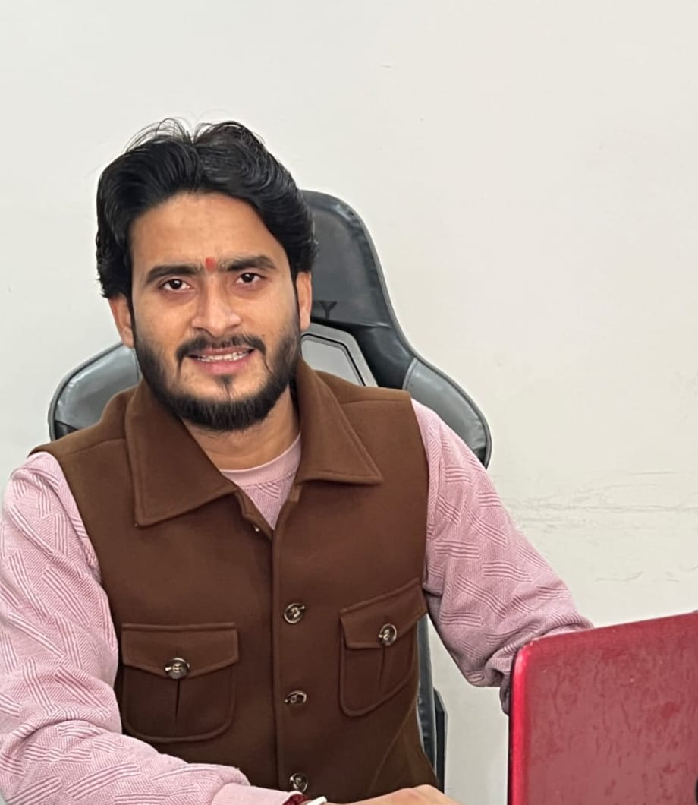
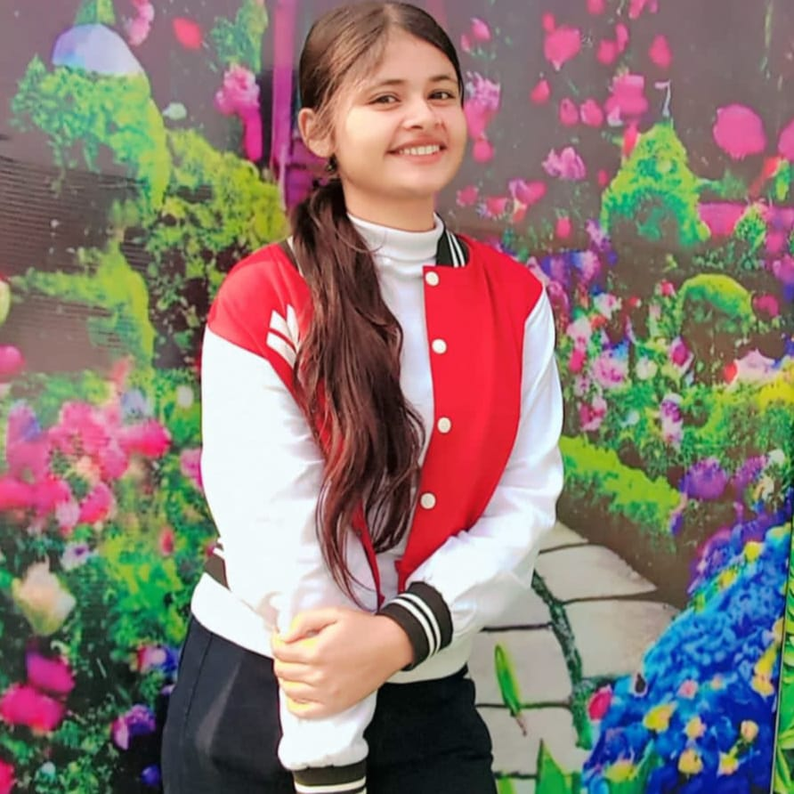
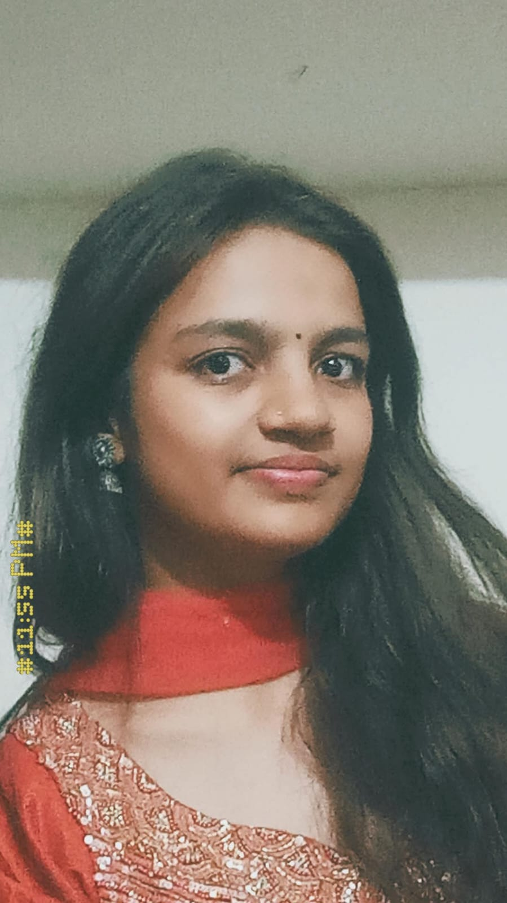
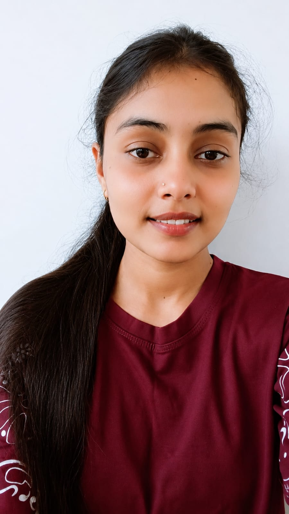
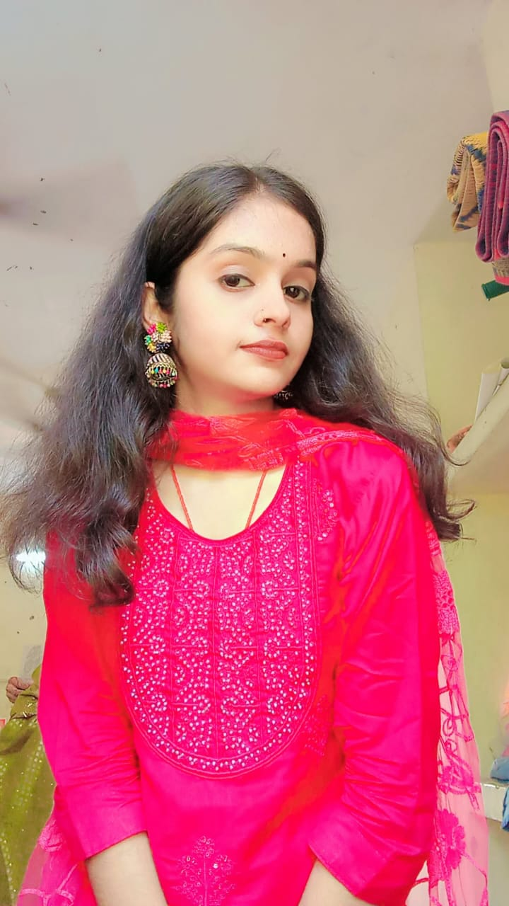
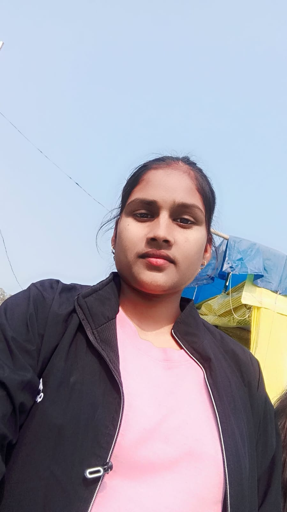
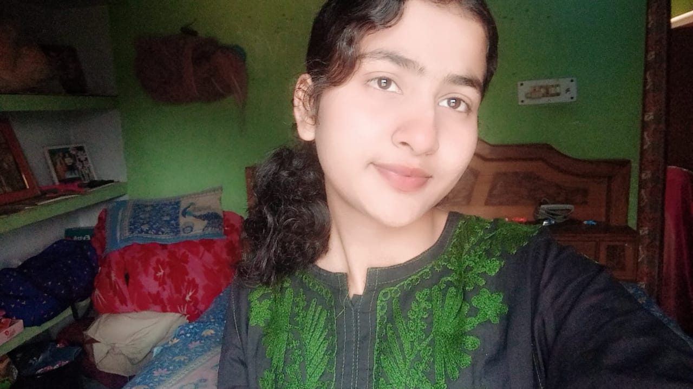

Meet the Team Experts
behind every journey
The planners, guides and storytellers who turn a map into a memory — one trip at a time.
Guided by one, carried out by many

Project Guide Mr. Suraj Singh We sincerely thank Mr. Suraj Singh, our Project Guide, for his valuable guidance, continuous support, and encouragement throughout this project. He is an excellent teacher and mentor whose knowledge, dedication, and motivation inspired us to successfully complete this project..

Srishti Singh
Team Leader Srishti Singh Srishti Singh led the team with dedication, responsibility, and confidence. She coordinated the project effectively, encouraged teamwork, and contributed significantly to the successful completion of the project.

Anushreya singh
Co-Team Leader Anushreya Anushreya contributed actively to the project with dedication and teamwork. She supported project planning, coordination, and implementation, helping the team successfully complete the project through her commitment and cooperation..

Kalpana Chaurasiya
Kalpana Chaurasiya UI/UX Designer Kalpana Chaurasiya designed the user interface of the project, ensuring an attractive, user-friendly, and responsive layout. She also contributed to improving the overall user experience..

Akshara singh
Backend Developer Akshara Singh worked on the backend development of the project, managed the database, and ensured smooth functionality and data processing.

Kajal Bind
Testing & Documentation Kajal Bind was responsible for testing the project, identifying and resolving issues, and preparing the project documentation to ensure accuracy and quality. .
Anshika singh
Tested the project, identified bugs, and ensured the proper functionality of all features.

Mahek Shukla
Prepared the project documentation, organized reports, and contributed to the final project presentation.
We plan trips the way locals would
Wanderloom Travels started with a simple idea — that the best journeys aren't just booked, they're built. For over eight years, our team has been designing trips across mountains, coastlines and cities that go beyond the usual checklist of landmarks. We work closely with local guides and small communities to bring travellers experiences that feel personal, not packaged.
From the first itinerary sketch to the last sunset of the trip, every member of our team plays a part in making sure your journey feels effortless. We believe travel should widen the world, not just fill a passport — and that belief shapes every route we design.